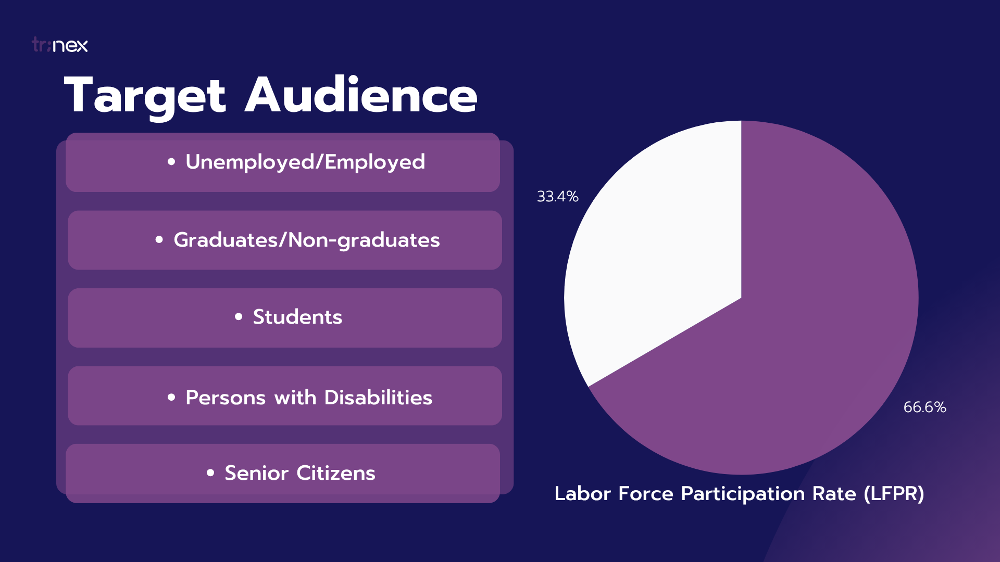
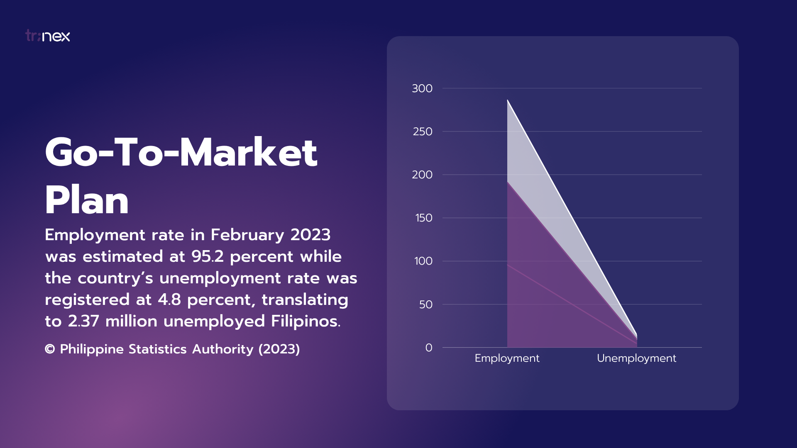

Web Design
Prospecs
A digital platform that helps individuals, especially students and fresh graduates, discover and align with the right career paths based on their unique strengths, interests, and potential.
Timeline:
May 2023
Project Type: Academic Work
Project Type: Academic Work
Role:
UI Designer
Project Manager
Project Manager
Tech Stack:
- Canva
- Figma
- Google Docs
The modern job market has become increasingly competitive and unpredictable, leaving many individuals—especially young professionals and graduates—uncertain about where they fit in. Traditional job search methods are often time-consuming, generic, and offer little guidance in aligning one’s personal strengths with meaningful career paths. As a result, many settle for roles they are overqualified or underprepared for, leading to job dissatisfaction, high turnover rates, and career stagnation.
Moreover, access to information about industries, job requirements, salary expectations, and skill development remains fragmented. Without proper guidance, individuals are left to navigate a complex landscape alone, often making decisions based on limited knowledge or social pressure rather than informed choice.
This disconnect between individual potential and job market demands signals a broader issue—one that calls for more intelligent, personalized, and empowering approaches to career exploration and employment readiness.
Problem
Finding Relevant Opportunities
Users struggle to identify and access opportunities that match their skills, interests, or career goals.
Lack of Feedback
There is minimal or no feedback provided to users about their applications or progress, making improvement difficult.
Limited Access to Information
Essential information about opportunities, requirements, or processes is often hard to find or unavailable.
Solution
Skill Assessment
Assist job seekers in self-assessing their abilities to align their skills with potential job opportunities.
Personalized Job Listings
Offer personalized job recommendations tailored to the individual's unique skills, background, and preferences.
Instant Application Process
Simplify the job application process by enabling users to directly apply for jobs within the platform, enhancing efficiency and convenience.
Filter Search Tool for Sectoral Groups
Provide a search filter to easily locate job opportunities intended for sectoral groups.
Job Search Map & Filter
Interactive job map to view and narrow down opportunities based on job title, location, industry, and experience level.
Customizable Profiles
Option to create a detailed professional profile with work experience, skills, and education.
Target Market


Learnings
This project was actually a little bit of personal to me because it played a significant role before I entered college. I was that kid snooping around the internet, trying to find ways to upskill or learn new things. I was always curious about what I could do with my skills, and I wanted to find a platform that could help me explore different career paths.
I garnered a lot of job opportunity platforms worldwide in my Notion workspace and I thought, during the development of this project, why not pick an industry or field that I really know and understand. Prospecs was born. Overall, the project met the requirements of our professor. The project was presented well and was able to win second place during the design demo programme of my university.
Additionally, this is my first ever UI project that I was forced to learn Figma and do the project in one sitting @1am with no electricity due to a typhoon. Plus, the presentation is on the next day. I was able to finish it and present it well, but I know that there are still a lot of things that I can improve on.
I learned that I can do a lot of things if I put my mind to it. I also learned that I can be creative and think outside the box. I also learned that I can work under pressure and still produce good results.
What Would I Have Done Differently?
PLANNING. PLANNING. PLANNING. Planning saves time in the execution of the project. Make your wireframes. Assess not only the design but with the functionality in the user perspective.
More Works
Meat&Grit
An mobile app for Filipino cuisine, connecting singles through food.

Forecasting Construction Value in Real Estate
A project forecasted residential construction values in the Philippines.

Creative Social Media Works
A diverse collection of engaging graphics created for various brands.

Nice to meet you

Shaina Mae Totisano
Student @University of Negros Occidental Recoletos
Email: smaetoti10@gmail.com